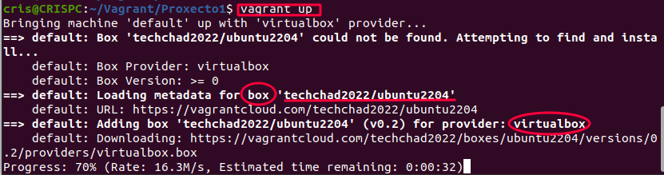
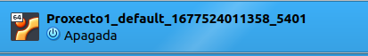
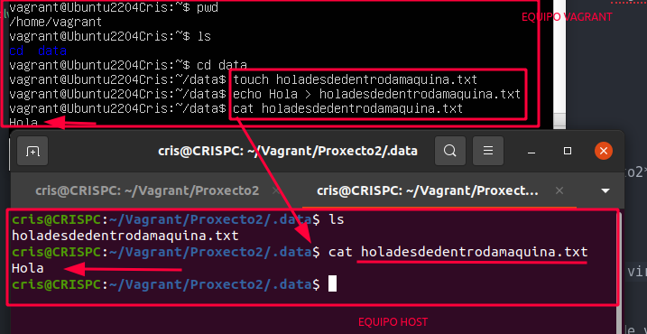
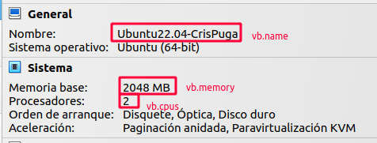

Accede á paxina de documentación do proxecto (https://developer.hashicorp.com/vagrant/downloads) e crea un titorial básico de como instalaches vagrant no teu sistema operativo.
Crea un directorio Vagrant dentro do cartafol do teu usuario, ou se estás na aula dentro de /media/DIURNO/Vagrant
mkdir Vagrant/Proxecto1
vagrant init --minimal
# -*- mode: ruby -*-
# vi: set ft=ruby :
Vagrant.configure("2") do |config|
config.vm.box = "base"
end
config.vm.box = 'nomebox ' indica o nome do Box que queremos cargar.
Vagrant.configure("2") do |config|
config.vm.box = "techchad2022/ubuntu2204"
end
cris@CRISPC:~/Vagrant/Proxecto1$ vagrant validate
Vagrantfile validated successfully.
cris@CRISPC:~/Vagrant/Proxecto1$ vagrant up

Bringing machine 'default' up with 'virtualbox' provider...
==> default: Box 'techchad2022/ubuntu2204' could not be found. Attempting to find and install...
default: Box Provider: virtualbox
default: Box Version: >= 0
==> default: Loading metadata for box 'techchad2022/ubuntu2204'
default: URL: https://vagrantcloud.com/techchad2022/ubuntu2204
==> default: Adding box 'techchad2022/ubuntu2204' (v0.2) for provider: virtualbox
default: Downloading: https://vagrantcloud.com/techchad2022/boxes/ubuntu2204/versions/0.2/providers/virtualbox.box
default: Calculating and comparing box checksum...
==> default: Successfully added box 'techchad2022/ubuntu2204' (v0.2) for 'virtualbox'!
==> default: Importing base box 'techchad2022/ubuntu2204'...
==> default: Generating MAC address for NAT networking...
==> default: Checking if box 'techchad2022/ubuntu2204' version '0.2' is up to date...
==> default: Setting the name of the VM: Proxecto1_default_1677524011358_5401
==> default: Clearing any previously set network interfaces...
==> default: Preparing network interfaces based on configuration...
default: Adapter 1: nat
==> default: Forwarding ports...
default: 22 (guest) => 2222 (host) (adapter 1)
==> default: Running 'pre-boot' VM customizations...
==> default: Booting VM...
==> default: Waiting for machine to boot. This may take a few minutes...
default: SSH address: 127.0.0.1:2222
default: SSH username: vagrant
default: SSH auth method: private key
default:
default: Vagrant insecure key detected. Vagrant will automatically replace
default: this with a newly generated keypair for better security.
default:
default: Inserting generated public key within guest...
default: Removing insecure key from the guest if it's present...
default: Key inserted! Disconnecting and reconnecting using new SSH key...
==> default: Machine booted and ready!
==> default: Checking for guest additions in VM...
default: The guest additions on this VM do not match the installed version of
default: VirtualBox! In most cases this is fine, but in rare cases it can
default: prevent things such as shared folders from working properly. If you see
default: shared folder errors, please make sure the guest additions within the
default: virtual machine match the version of VirtualBox you have installed on
default: your host and reload your VM.
default:
default: Guest Additions Version: 6.0.0 r127566
default: VirtualBox Version: 7.0
Vese en VirtualBox que se creou a máquina:

Na saída, cando chamamos a "vagrant initW, vemos:
default: Box techchad2022/ubuntu2204 could not be found. Attempting to find and install...
==> default: Generating MAC address for NAT networking...
default: 22 (guest) => 2222 (host) (adapter 1)
...
default: SSH username: vagrant
default: SSH auth method: private key
E pode verse na máquina virtual a configuración:
Configúrase o acceso por ssh á máquina virtual usando claves dixitais (sen contrasinal).
Finalmente indica que as Guest Additions non se corresponden coa versión de VirtualBox, así que deberíamos instalalar no servidor. No apartado Instalar Guest Additions
A máquina execútase en segundo plano, é dicir en modo headless.
vagrant status: Para ver o estado da máquina.

vagrant halt : Parar a máquina virtual
vagrant up: Arrancar de novo a máquina virtual
vagrant destroy -f: Destruir a máquina virtual e a carpeta .vagrant.
vagrant ssh : Permite conectarse por ssh coa máquina.
Tamén podería empregarse ssh vagrant@127.0.0.1 -p 2222
sudo apt-get update
mkdir /home/vagrant/cd
sudo mount -t iso9660 /dev/sr0 /home/vagrant/cd
cd /home/vagrant/cd
sudo ./VBoxLinuxAdditions.run
Si durante a instlación nos pide instalar algún paquete para poder finalizar a instalación das Guest Additions, facémolo.
vagrant upvagrant ssh

lsb_release -a.

Se miramos dentro da carpeta do proxecto, existe unha carpeta .vagrant onde se van metendo as configuracións da máquina.

vagrant destroy -f
Esto destrúe a máquina virtual e a carpeta .vagrant.


rm techchad2022-VAGRANTSLASH-ubuntu2204/Para cambiar determinados parámetros de configuración no vagrantfile, facemos:
Vagrant.configure("2") do |config|
config.vm.box = "techchad2022/ubuntu2204"
config.vm.hostname='Ubuntu2204Cris'
config.vm.provider "virtualbox" do |vb|
vb.memory = "2048"
vb.cpus = 2
vb.name='Ubuntu22.04-CrisPuga'
vb.gui = true
end
config.vm.synced_folder ".data", "/home/vagrant/data"
end
Nome do hostname cando a máquina se está a executar.

Crear unha carpeta compartida entre a máquina Host e a máquina virtual Vagrant, engadimos a seguinte liña no ficheiro vagrantfile.
config.vm.synced_folder "./carpetadentroEntornoProxecto", "/home/vagrant/micarpeta"
Para facer isto, dentro da máquina host, debemos crear unha carpeta dentro do Proxecto.
mkdir ./data
E si levantamos a máquina, na seguinte imaxe podemos ver, cómo o que se crea en /home/vagrant/micarpeta, se ve na carpeta do proxecto .data/ e viceversa.

Características da máquina en VirtualBox config.vm.provider "virtualbox" do |vb| dentro deste parámetro e ata que aparece end
vagrant up
Copia o vagrantfile do proxecto1 a outra carpeta Proxecto2, que será un entorno virtual para Vagrant, e cambialle as seguintes configuracións:
Borra as máquinas virtuais creadas no Proxecto1 coas opcións de vagrant correctas, eliminando os boxes.
Crea un novo proxecto, chamado Proxecto3, e modifica o Vagrantfile para facer que a distro base sexa centos-7.6:
Cristina Puga Barreiros @crispuga

Este obra está bajo una licencia de Creative Commons Reconocimiento-CompartirIgual 4.0 Internacional.